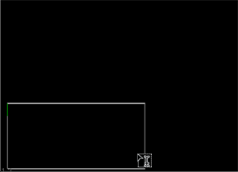

创建文本覆盖涉及一些准备工作，特别是哪些通道容纳文本和初始文本框的定位。
| 1。 | 选择 绘制 > 文本 创建一个 文本节点并将其连接到查看器。 |
| 2. | 在文本节点属性，选择的渠道，你想要的文字出现在的 输出 控制。 |
| 3. | 如果要将任何通道与绘制的文本相乘，以便将它们设置为文本形状之外的黑色，请使用 Premult 控制。 |
| 4. | 从 剪辑到 下拉菜单中，选择要如何限制输出图像。 |
• 没有剪辑 -不要限制输出图像。
• Bbox -将输出图像限制到传入的边界框。
• 格式 -将输出图像限制在传入格式区域。
• 联合 bbox 格式 -将输出图像限制为传入边界框和格式区域的组合。
• 相交 bbox 格式 -将输出图像限制为传入边界框和格式区域的交集。
| 5. | 如果您想在绘制受影响的通道之前将其清除为黑色，请检查 替换 . |
默认情况下, 替换 未启用，文本绘制在输入图像的顶部。
| 6. | 如果您对最初出现在格式区域左上角的文本感到满意，您可以开始 输入文本 使用 消息 字段。 |
| 7. | 如果你想对文本的初始位置有更多的控制，或者画一个文本框来约束你的文本，确保 编辑 文本 在查看器上方启用，然后: |
• 在查看器中单击以将光标置于您希望文本显示的位置,
OR
• 在查看器中绘制一个包含文本的框。
提示:
光标显示为
 最初添加文本节点时，在查看器中。
最初添加文本节点时，在查看器中。

在自定义框中输入的文本受 盒子 x , r ,和 t 边界上 变换 标签，但 y 边界可以越界。
提示: 您可以调整任何时候都使用 盒子 Xyrt 控件或通过拖动查看器句柄。
| 8。 | 如果要遮罩图像的一部分，请参见 观察者的遮蔽区域 |
| 9. | 一旦你对光标位置满意，继续 输入文本 . |
|
|